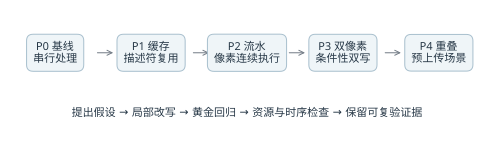
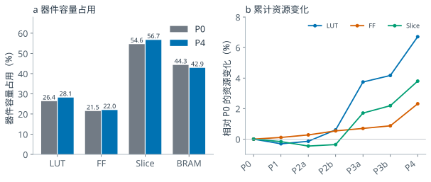
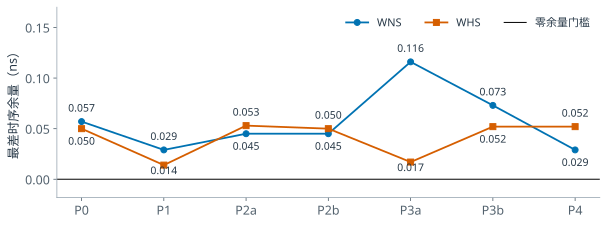
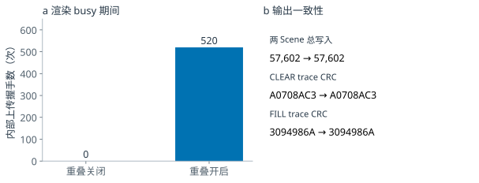

AI 辅助 Scene2D GPU 优化
优化过程、同负载对照与工程验证
PYNQ-Z2 · Vivado 2026.1 · 实验 2026.10.03—04 · 修订 2026.10.26
在 PYNQ-Z2 上，我们围绕 Scene2D 命令式二维 GPU 的描述符访问、像素执行和跨帧上传开展四阶段优化。AI 辅助提出局部方案、改写 RTL、分析失败并组织复验；效果由 XSim 黄金对照和 Vivado 实现报告判定。固定 100 MHz 渲染时钟后，代表性 Tile 缓存加流水场景加速 5.92 倍，Blit 流水加速 4.91 倍，核心栅格双像素场景约加速 2 倍。
5.92× Tile 缓存与流水；同一 Tile 单元负载
4.91× Blit 流水；256 次不透明写入
2.00× 栅格双像素；代表性核心场景

图 1 四阶段优化与验证闭环。P2、P3 分别细分为两条实施路径；箭头表示累计功能，不表示加速比相乘。来源：S1—S3。 表 1 阶段方案与验证目标
阶段 AI 辅助的分析与实施 验证关注点 P1 识别同一 Tile 描述符的重复读取；复用寄存器并加入 tag 和有效位 缓存失效、素材更新、翻转、透明与裁剪 P2 将请求、返回和写入组织为浅流水；提前锁存源原点和边界 valid 对齐、末请求排空、错误前缀 P3 扩展为条件性双写；保留独立 lane 掩码及有序 CRC 奇偶地址、行尾、透明 lane、时序 P4 复用双命令 bank 预上传；加入 READY、hold/release 与代次栅栏 bank 所有权、反压、呈现与资源更新
资源代价为整机 LUT 增加 941 个（6.71%）、FF 增加 529 个（2.32%），BRAM Tile 从 62 降至 60。P4 最终 WNS/WHS 为 0.029/0.052 ns。以上为离线功能与实现结果；板端 P0/P4 同场景端到端性能、功耗和开发工时收益需要独立测量。
1 前后对比标准与测量边界
前后对比采用两套互补口径：资源与时序比较 P0 和 P4 整机实现；性能比较同一负载下优化开关关闭与开启的 RTL 执行周期。不同测试负载的加速比各自报告，不能相乘作为整机加速比。
表 2 统一对照条件
控制项 本次采用的固定条件与判据 器件与工具 PYNQ-Z2 / xc7z020clg400-1；Vivado / XSim 2026.1，Windows 版本身份 P0 BUILD_ID C0060700；P4 BUILD_ID C0060760；P4 是独立实验产物 时钟与画布 render 100 MHz，pixel 74.25 MHz；320×180；4 倍最近邻输出 1280×720p60 功能与容量 Scene ABI 1.0、GameSDK 1.1；INDEX4 素材；双 framebuffer，每 bank 57,600 字节 同负载配对 保持输入命令、素材、尺寸、透明/翻转/裁剪条件一致；仅改变表中指定开关 正确性等价 有序写入地址和值、count、trace CRC、错误前缀与取消重试；核心另检查真实 XPM 读回 周期口径 归档 TB 中执行区间的 cycle 计数；按具体模块/核心分别解释；不含主机、网络和显示器延迟 资源与时序 最终 post-route 整机报告；LUT/FF/Slice/BRAM/DSP/MMCM；保持原时钟与约束意图 重复与统计 归档为确定性 RTL 用例和单次版本实现；不构造方差、误差线、置信区间或显著性检验
表 3 评价指标与计算方法
指标 公式与解释 加速比 S S = C关闭 / C开启。1.00 倍表示无加速。 周期减少率 R R = (C关闭 - C开启) / C关闭 × 100%。 渲染时间 100 MHz 下 t(微秒) = C / 100；仅换算该执行区间。 资源相对变化 (N_P4 - N_P0) / N_P0 × 100%；器件占用率另以器件容量为分母。
720p60 表示扫描输出模式。局部像素吞吐峰值、GPU 绘制时间、游戏呈现 FPS 和输入到屏幕延迟是不同指标。本节的周期减少不能直接换算成整机 FPS 增幅。
2 Tile 消融与优化机制
固定 size16、3×2 Tile、XY 翻转和透明处理用例，八种开关组合均完成 1,440 次有效写入且 error=0。图 2 同时展示有效改进和收益较小的组合，使优化归因能够由同一负载直接验证。
图 2 相同 size16 / 3×2 Tile 用例的八组合对照，数值为周期及相对全关闭的局部加速比。双像素路径依赖缓存、流水同时开启；开关置 1 不一定激活该路径。来源：S5、S9。 表 4 Tile 八组合完整结果
缓存 / 流水 / 双像素 周期 时间 微秒 描述符读取 相对全关闭 0 / 0 / 0 13,860 138.60 1,536 1.00 倍 0 / 0 / 1 13,860 138.60 1,536 1.00 倍 0 / 1 / 0 13,764 137.64 1,536 1.01 倍 0 / 1 / 1 13,764 137.64 1,536 1.01 倍 1 / 0 / 0 9,540 95.40 96 1.45 倍 1 / 0 / 1 9,540 95.40 96 1.45 倍 1 / 1 / 0 2,340 23.40 96 5.92 倍 1 / 1 / 1 1,572 15.72 96 8.82 倍
单独启用流水仅减少 0.69% 的周期；缓存将描述符读取从 1,536 次降至 96 次，减少 93.75%。缓存与流水共同开启后降至 2,340 周期，说明重复描述符访问是本用例的重要限制。再启用双像素后为 1,572 周期，相对全关闭加速 8.82 倍。
双像素路径要求 cache、pipeline 同时开启，并满足描述符有效、行内边界和地址对齐条件。因此 001、011、101 与对应 pair=0 组合周期相同，属于前置条件未满足时的兼容路径；八组合结果不能按三个独立主效应相加解释。8.82 倍仅适用于本 Tile 单元负载。
3 不同绘图路径的配对性能结果
图 3 分别检验 Blit 流水、核心 Tile 双像素和核心栅格双像素。每项保持输入和前置优化一致，只切换被检验的路径。不同子图采用独立周期刻度，表 5 汇总完整数值。
图 3 三条绘图路径的周期对照。右图另拆分仅 Blit 双写、仅实色双写与全部开启；实色指 CLEAR/FILL。上方加速比对应全关至全开。来源：S6。 表 5 各绘图路径的周期对照
同负载测试 关闭 → 开启 周期 减少 加速比 P1 Tile 缓存 13,860 → 9,540 31.17% 1.45 倍 P2a Blit 流水 1,281 → 261 79.63% 4.91 倍 P2b Tile 流水 9,540 → 2,340 75.47% 4.08 倍 P1+P2b 累计 13,860 → 2,340 83.12% 5.92 倍 P3a Tile 双像素 813 → 557 31.49% 1.46 倍 P3b 栅格双像素 57,909 → 28,974 49.97% 2.00 倍
P2b 与累计 P1+P2b 复用图 2 的 Tile 负载；其余项使用各自专用负载。周期来源和开关背景见 performance.csv。
表 6 代表性用例与输出等价检查
用例 负载和正确性证据 Blit 流水 256 次不透明有效写入；1281→261 周期，即 12.81→2.61 微秒；合法连续段达到 1 像素/拍。 核心 Tile 双像素 cache/pipeline 等前置优化固定；有效写入 513，CRC 88CEA2AB 保持；813→557 周期。 核心栅格双像素 Tile/cache/pipeline 固定开启；普通不透明帧有效写入 57,873，CRC 0CD1AB1A 保持；579.09→289.74 微秒。
同一栅格负载中，仅 Blit 双写为 57,781 周期，仅实色双写为 29,102 周期，两者同时开启为 28,974 周期；四组写入数和 CRC 均相同。该用例的主要收益来自 CLEAR/FILL，不宜据此声称所有精灵场景均加速 2 倍。双像素路径仍受对齐、源 byte、行界和透明 lane 条件限制。
4 资源成本与容量占用
P0/P4 的直接资源对照取自整套 PL 设计的实现后报告，包含 GPU、DMA、HDMI、控制与回传配套。图 4 左侧以器件容量统一为百分比，右侧展示相对 P0 的累计资源变化。

图 4 P0/P4 容量占用及累计资源轨迹。容量分母为 LUT 53,200、FF 106,400、Slice 13,300、BRAM 140；各类占用率分别解释。来源：S4。 表 7 累计版本的整机资源
累计版本 LUT FF Slice BRAM Tile BUILD_ID P0 14,025 22,845 7,262 62 C0060700 P1 13,982 22,870 7,250 62 C0060710 P2a 14,005 22,908 7,229 62 C0060720 P2b 14,110 22,968 7,236 62 C0060730 P3a 14,550 23,005 7,386 60 C0060740 P3b 14,610 23,044 7,421 60 C0060750 P4 14,966 23,374 7,538 60 C0060760
+6.71% LUT +941；FF +529（+2.32%）
-2 Tile BRAM 62→60；容量合同保持
2 / 2 DSP / MMCM；各阶段保持不变
P4 相对本轮预算 15,110 LUT / 23,844 FF 还剩 144 LUT / 470 FF。该数值是实验预算余量，与器件剩余容量不同。P1 整机 LUT 从 14,025 降至 13,982，包含工具映射与布局变化，不能据此断言缓存本身节省逻辑；同配置局部 OOC 记录的缓存增量为 +27 LUT / +25 FF。BRAM 的下降来自 framebuffer 组织调整，容量合同保持。
5 失败反馈与时序修复体现 AI 辅助过程
各累计版本最终均满足同目标时钟下的 setup/hold 门槛。图 5 给出整机结果；表 8 用局部失败和复验说明修改如何收敛。OOC 指模块独立实现，其余量与整机结果分别解释。

图 5 各累计版本的最终整机 WNS/WHS，渲染与像素时钟保持 100/74.25 MHz。P4 为 0.029/0.052 ns，setup 余量较 P0 减少 0.028 ns。来源：S4。 表 8 失败反馈与修复复验
问题与原始反馈 AI 辅助定位与修改 复验结果与层级 Tile 流水定位与尾界组合链过长；首轮 OOC 开启版 WNS -0.981 ns 提前锁存 descriptor 源原点和水平终点，缩短逐像素定位链 同负载黄金保持；最终 Tile 流水 OOC 0.281/0.121 ns Blit 双像素局部 OOC WNS -1.539 ns；首次修复又在 negative_xy 触发 watchdog 拆分 source/pair/step/rowend 链；使用 Blit 自身候选坐标判断尾部 原独立 oracle 复验；最终 Blit pair OOC 1.701/0.159 ns P4 开启版核心 OOC 默认布线 WNS -0.006 ns 保留失败 DCP；同钟同 RTL 同约束执行后布线 AggressiveExplore 开启版 OOC 0.070/0.100 ns；整机另为 0.029/0.052 ns P4 busy 撤销至 hold 锁存间隙可能启动 READY 在 renderer_start 条件中增加 !renderer_done，关闭完成边界窗口 off/on 写入与 CRC 保持；520 次重叠握手及边界测试通过
来源：S2、S3。AI 辅助解释反馈并形成可检验修改；独立黄金和工具报告决定该轮是否通过。案例中前后 OOC 数值仅在对应模块与轮次内比较。
P4 整机 TNS/THS、setup/hold 失败端点和内部未约束端点均为 0；时序报告仍保留 4 个输出无 delay 的既有缺项，质量报告也存在原有 warning/info。应表述为“满足本轮既有门禁”，不能写成零告警或所有 I/O 时序完全签核。
6 上传渲染重叠及输出一致性
P4 使用双命令 bank，在当前 Scene 渲染期间预上传同资源代次的下一 Scene，最多保留一个 READY。renderer 读 bank 被锁定，完成结果保持到呈现及软件 release；资源更新先 drain，再等待 generation 实际提交。

图 6 同一两 Scene 测试中的重叠行为与输出等价。520 为 renderer_busy 期间下一 Scene 的核心内部上传握手数。来源：S7。 表 9 P4 输出与协议边界检查
检查项 关闭重叠 开启重叠 busy 期间下一 Scene 内部握手 0 520 两 Scene 有效像素写入 57,602 57,602 CLEAR trace CRC A0708AC3 A0708AC3 FILL trace CRC 3094986A 3094986A 队列满、提前 release、资源栅栏 基础对照 full_queue=1 / early_release=1 / resource_fence=1 generation 拒绝、半包复位、末字节 基础对照 generation_rejects=3 / partial_reset=1 / last_byte=11
握手计数证明下一 Scene 已在当前渲染期间推进。调度收益来自利用这段原本等待的时间；其大小仍由上传耗时、渲染、vblank 与软件退休共同决定。本计数既不等于外部 DMA 总 beat 数，也不足以计算端到端节省时间。
本轮 18 份最终仿真日志覆盖 off/on、完整画布扫描、命令 bank、绘图/掩码/错误前缀及资源更新。软件的 128 个测试与 4 个子测试、后续关闭安全增量 87 个测试来自归档事实记录，两轮范围有重叠，不相加宣称为互不重复的总用例数。
7 可支持的结论与后续补测设计
表 10 主要结论的证据范围
拟写入报告的结论 证据状态 适用范围 缓存与流水降低了代表负载的执行周期 原始 RTL 日志已复核 明确具体负载、开关和测量模块 P4 以少量 LUT/FF 增量保留原存储容量合同 实现后报告已复核 整套 PL 设计；不同于 GPU 核心净面积 P4 预上传可与当前渲染真实重叠 原始握手和输出对照已复核 指定两 Scene 确定性仿真 P4 完整游戏 FPS、尾延迟或功耗更优 本次归档不支持量化结论 需要同板同 Scene 端到端配对实测 AI 缩短开发工时或提高人工效率若干倍 无对照工时记录 不填写节省百分比或 AI/人工效率倍数
建议补测方案如下。表内次数为后续计划，不属于已完成实验；在执行前固定版本和负载，按固定顺序记录所有成功、失败与超时。
表 11 板端配对补测方案
设计项 建议执行标准 版本与环境 同一 PYNQ-Z2、相同镜像与驱动配置；分别核验 P0/P4 bit/HWH/manifest 和 BUILD_ID；相同 HDMI 模式、资源和 Scene 序列 负载矩阵 全屏 CLEAR/FILL、透明/翻转/裁剪精灵、size16 Tile、混合实际游戏；另测静态资源与每帧资源更新两组 运行设计 建议每组 5 次配对运行，按 P0/P4 与 P4/P0 交替；每次预热 300 帧、计入 3000 帧；重载过程不混入稳态 时延与帧率 以相同单调时钟记录 submit 至 displayed_seq 确认的每帧时延；报告 P50/P95/P99、帧数、超时和漏帧；FPS 以唯一确认序号计数 正确性与统计 同一输入序列核对黄金结果和逐帧身份；以运行而非相邻帧作为重复单位；公布逐运行结果及配对差值 扩展指标 DMA/上传/渲染/等待 vblank 分段计时；输入到屏幕需额外外部同步测量；功耗需相同供电点和空闲基线 AI 效率评估 如需评价 AI，预先定义相同任务、质量门禁、参与者和工具；记录人工活跃工时、工具等待与返工，不用构建耗时替代工时
AI 辅助披露可用正文：本项目在目标和接口约束下使用 AI 辅助分析 GPU 瓶颈、提出缓存与流水等优化方案、生成局部修改和验证脚本，并根据仿真及实现反馈修复边界问题。设计效果由独立黄金、XSim、Vivado 报告和产物身份检查确认。AI 输出均需经过工程验证；本阶段未测量 AI 相对于纯人工开发的工时收益。
附录 写作方法与证据索引
所附 Lucas–Kanade 报告可借鉴“AI 提示词—修改过程—实现解释”的叙事结构。本章节将其压缩为“问题—建议—修改—证据—适用边界”，将篇幅主要留给消融、性能、资源和时序图表。光流算法内容及其中的数值不作为 Scene2D GPU 的实验数据。
表 12 写作教程与使用方法
教程或 skill 本报告如何采用 墨尔本大学 Technical reports [W1] 先交代问题、目标和主要结果；图表编号、正文引用、自包含图题；详细证据放附件。 Michael Ernst 技术论文写作教程 [W2] 围绕要证明的结论组织材料；每个结果解释意义；只保留能解释取舍的失败案例。 Nature research figure guide [W3] 标清坐标与单位；使用可区分配色、清晰标签；保留矢量图和可编辑文字。 本机 paper-buddy skill 已使用 figures-and-rigor 与 structure-and-writing 的图表选型、实验分析、数字一致性与主张证据核查。 本机 pdf skill 与 xilinx-suite 前者用于 PDF 读取、排版与视觉核查；后者用于理解实现报告、阶段记录和 FPGA 验证边界。
复用提示词示例 以下是根据工程记录重构的建议写法，不是历史对话原文。
“目标为 PYNQ-Z2 / xc7z020clg400-1，Vivado 2026.1，100 MHz render 与 74.25 MHz pixel。保持 Scene ABI、素材容量、绘制顺序和错误语义。请根据同一负载的日志识别瓶颈，提出一个可关闭的局部优化，明确假设、资源预算、边界和独立黄金验证；失败时保留证据，并在相同约束下复验。不得将局部吞吐推算为整机 FPS。”
证据索引：S1 优化总结；S2 10 月 3 日逐轮记录；S3 10 月 4 日 P4 验收；S4 各阶段 utilization/timing 原报告；S5 Tile 八组合日志；S6 Blit 与核心 pair/raster 日志；S7 P4 上传与边界日志；S8 GPU 架构；S9 P3a 归档 RTL 中的双像素前置条件。完整路径、SHA-256 和抽取行号见 data/source_manifest.json，原文件副本见 evidence/。
[W1] University of Melbourne
[W2] Michael Ernst
[W3] Nature research figure guide
以上网页访问日期为 2026 年 10 月 26 日。教程用于写作和制图规范，性能数据均来自本项目归档。引用、数值和结论应由团队在合并终稿时复核，AI 辅助情况按提交要求披露。